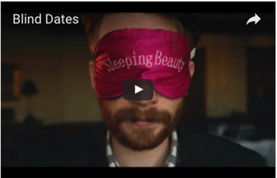

Cedarville University: Be Bold"for the Word of God and the Testimony of Jesus Christ."Latest SGA video

Student programs
Events
Today- Chapel: Dr. White
- Baseball vs. Oakland City
March- Senior Design Showcase
- Senior Studio Art Showcase
- Library Book Sale
- Chapel: Dr. Steve Mckinion